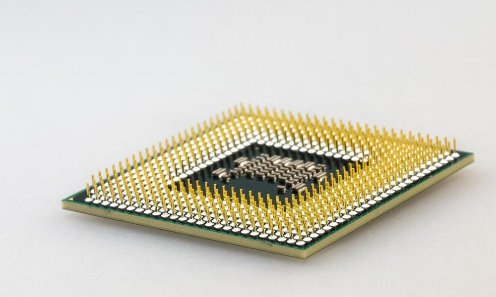
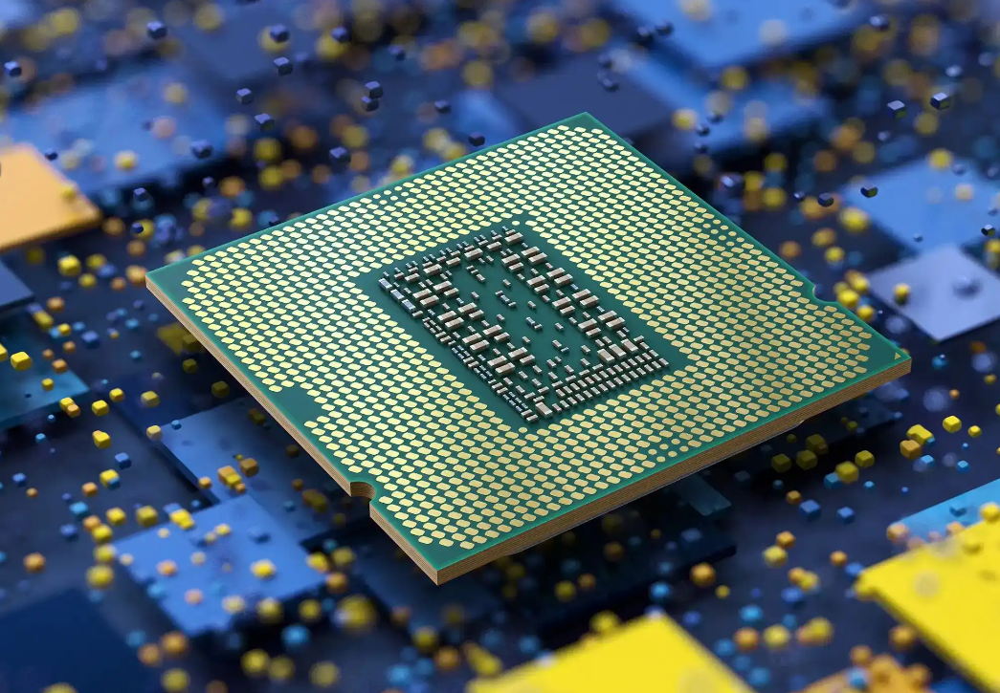

3600X Computer Processing Unit
The Triad Corps 3600X Computer Processing Unit is designed for budget-conscious users seeking reliable performance for their everyday computing needs. Powered by advanced architecture and optimized for efficiency, the 3600X CPU delivers smooth multitasking, quick application launches, and seamless web browsing experiences. Its energy-efficient design ensures lower power consumption, contributing to eco-friendly computing.
5900X Computer Processing Unit
Explore the pinnacle of computing power with Triad Corps' 5900X Computer Processing Unit. Crafted for enthusiasts, gamers, and professionals who demand uncompromising performance, the 5900X CPU redefines what's possible in the world of computing. With lightning-fast processing speeds, remarkable multitasking capabilities, and cutting-edge technology, this high-end CPU empowers users to tackle resource-intensive tasks, run complex simulations, and enjoy immersive gaming experiences at maximum settings. Unleash your creativity, conquer virtual worlds, and accelerate your productivity with the extraordinary power of the 5900X CPU.
Other Triad Corps CPUs
Other Products
- Smartphones
- Laptops
- Tablets
- Smartwatches
- Networking Devices
- Printers
- Software Solutions
- Accessories